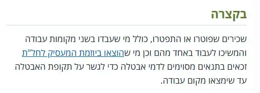
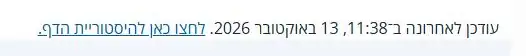
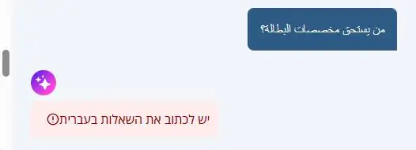
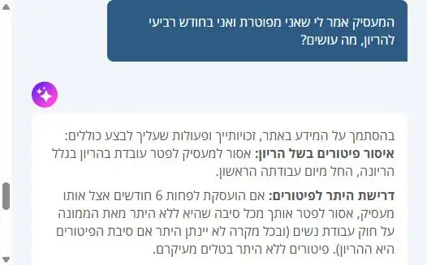
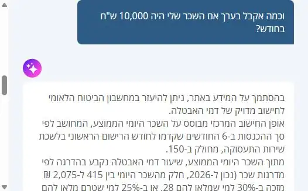
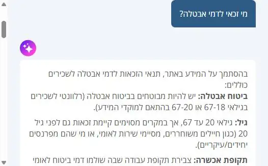

כשמישהו שואל AI על הזכויות שלו, התשובה צריכה להגיע מכל-זכות.
בדיקה עצמאית של שני דברים באתר כל-זכות: איך מנועי חיפוש ו-AI רואים אותו, ואיך עובד הצ'טבוט שלו. לכל ממצא יש צילום של המצב היום, הסבר של הבעיה, ואיך נראה הפתרון.
נבדק ב-15 באוקטובר 20265 עמודים בעברית ובערבית4 שיחות עם הצ'טבוט
המטרה: כך זה צריך להיראות במנוע חיפוש עם AIב-Google, ב-ChatGPT, ב-Gemini או ב-Perplexity. לא בבוט של האתר.
מי זכאי לדמי אבטלה?
תשובת AI
שכירים שפוטרו או התפטרו, וגם מי שהוצאו לחל"ת ביוזמת המעסיק, זכאים בתנאים מסוימים לדמי אבטלה1 עד שימצאו עבודה. אחד התנאים המרכזיים: לפחות 12 חודשי עבודה מתוך 18 החודשים שלפני הרישום בשירות התעסוקה1.1
כ
kolzchut.org.il › he › דמי_אבטלה
דמי אבטלה (זכות) – כל-זכות
עודכן ב-13 באוקטובר 20263
2
הטקסט המסומן כבר קיים באתר. הוא לקוח כמעט מילה במילה מפסקת "בקצרה" בעמוד דמי אבטלה. לא צריך לכתוב תוכן חדש.
המקור: כל-זכות, עם קישור. בשביל זה המנוע צריך לדעת מה הכתובת הרשמית של העמוד ומי מפרסם אותו. ממצאים 3 ו-4
התאריך: המידע עדכני. היום התאריך ברור לקורא אבל לא למכונה. ממצא 2
איור להמחשה של המטרה, לא צילום של מנוע אמיתי. מה המנועים עונים היום צריך למדוד, וזה הצעד הראשון בתוכנית.
שלושה מסרים
התוכן מצוין, והאתר כבר מתקדם
כל-זכות כותב "תשובה קודם, פירוט אחר כך", ויש לו כבר כלים שרוב האתרים בישראל לא בנו: קובץ הנחיות למודלי AI, גרסה נקייה של כל עמוד, וצ'טבוט פעיל. מה כבר עובד
מה שחסר הוא "השכבה למכונות"
אדם שקורא את העמוד מבין הכול. מכונה לא יודעת מה הכתובת הרשמית, מה התקציר ומתי העמוד עודכן. התיקון הוא שתי שורות הגדרה והרחבת קוד קטנה, בלי לגעת בתוכן. חלק א
הצ'טבוט טוב בעברית, וסגור לדוברי ערבית
הבוט עונה נכון ומפנה למקורות, אבל מסרב לשאלות בערבית, לא שואל את השאלה שמכריעה את התשובה, ולא מקשר למחשבונים. חלק ב
GEO
כמו SEO, אבל למנועים שכותבים תשובה במקום להציג רשימת קישורים (ChatGPT, התקציר של Google). המטרה: שכל-זכות יהיה המקור שהתשובה מצטטת.
"השכבה למכונות"
שורות בקוד העמוד שהקורא לא רואה, אבל מנועים קוראים: כתובת רשמית, תיאור, תאריך עדכון ומי המפרסם.
חלק א
איך מנועי חיפוש ו-AI רואים את האתר
כדי שמנוע יצטט עמוד, הוא צריך שלושה דברים: למצוא אותו, להבין מה כתוב בו, ולסמוך על כך שהוא עדכני. בדקתי 5 עמודים בקוד שלהם.
מה כבר עובד
קובץ הנחיות למודלי AI (llms.txt)מבקש מהם לצטט את הכתובת, לבדוק את תאריך העדכון ולא לדבר בשם האתר.
גרסה נקייה של כל עמודמודל שמבקש Markdown מקבל את המאמר בלי עיצוב ותפריטים.
שאלות ותשובות מובנותבעמוד דמי אבטלה 5 שאלות מסומנות בקוד כך שמנועים מזהים אותן.
קשר בין שפותכל עמוד מצביע על הגרסה שלו בערבית וברוסית.
1. אין תיאור לעמוד
חשיבות גבוהה
לכל עמוד יש סיכום מצוין בראשו, אבל הוא לא מסומן בקוד כתיאור העמוד. לכן Google, וואטסאפ ומנועי AI בוחרים קטע אקראי במקומו.
היום

צילום מסך, kolzchut.org.il, 15.10.2026
הסיכום קיים בעמוד. אבל בקוד העמוד:
<!-- דמי אבטלה: מה יש היום בראש הקוד -->
<title>דמי אבטלה (זכות) – כל-זכות</title>
<meta property="og:title" content="דמי אבטלה">
<!-- אין meta name="description" -->
<!-- אין og:description -->
אחרי התיקון
<meta name="description" content="שכירים שפוטרו
או התפטרו, כולל מי שעבדו בשני מקומות עבודה
והמשיכו לעבוד באחד מהם וכן מי שהוצאו ביוזמת
המעסיק לחל"ת זכאים בתנאים מסוימים לדמי אבטלה
כדי לגשר…">
כך זה ייראה בתוצאת חיפוש או בשיתוף:
kolzchut.org.il › he › דמי_אבטלה
דמי אבטלה (זכות) – כל-זכות
שכירים שפוטרו או התפטרו, כולל מי שעבדו בשני מקומות עבודה והמשיכו לעבוד באחד מהם וכן מי שהוצאו ביוזמת המעסיק לחל"ת זכאים בתנאים מסוימים לדמי אבטלה כדי לגשר…
למה זה חשובהתיאור הוא מה שאנשים רואים לפני שהם לוחצים, ומה שמנועי AI לוקחים כסיכום של העמוד.
מה עושיםקוד קטן מעתיק אוטומטית את פסקת "בקצרה" לתיאור, בכל עמוד, בלי עבודה ידנית. איך מיישמים: צעד 2
2. תאריך העדכון ברור לקורא, אבל מבלבל למכונה
חשיבות בינונית
התאריך מוצג נכון בתחתית העמוד. אבל התאריך הטכני שהשרת שולח למנועים מציג את התאריך של היום, בכל עמוד, גם בעמודים שלא נערכו חודשים.
היום

צילום מסך, kolzchut.org.il, 15.10.2026
מה שהשרת שולח למנועים (כותרת Last-Modified), באותו יום:
עמוד
נערך בפועל
השרת אומר
דמי אבטלה
13.10.2026
15.10.2026
דמי הבראה
29.09.2026
15.10.2026
פיטורי עובדת בהיריון
06.07.2026
15.10.2026
עמוד הבית
23.11.2025
15.10.2026
אחרי התיקון
// בנתונים המובנים של העמוד"dateModified": "2026-10-13T08:38:00Z"// בכותרת שהשרת שולחLast-Modified: Tue, 13 Oct 2026 08:38:00 GMT
שני הנתונים מראים את אותו תאריך שהקורא רואה: 13 באוקטובר (11:38 שעון ישראל).
למה זה חשובבזכויות, סכומים ותנאים משתנים כל שנה. מנוע שחושב שכל עמוד "עודכן היום" לא יכול להבדיל בין מידע עדכני לישן.
מה עושיםהוספת התאריך לנתונים המובנים, ובדיקה עם צוות התשתיות למה הכותרת מציגה את התאריך של היום. איך מיישמים: צעד 2
3. לאותו עמוד יש כמה כתובות, ואין "כתובת רשמית"
חשיבות גבוהה
אותו מאמר נטען במלואו מכמה כתובות שונות. בלי תגית canonical (שורה שאומרת "זו הכתובת הרשמית"), מנוע עלול לספור אותן כעמודים נפרדים ולפצל ביניהן את הציטוטים.
היום
כתובת
תוצאה
/he/דמי_אבטלה
נטען (200)
/he/דמי_אבטלה?utm_source=…
נטען (200)
/w/he/index.php?title=דמי_אבטלה
נטען (200)
אף אחת מהן לא מפנה לאחרת, ובאף אחת אין canonical. לזכותם: קובץ robots.txt חוסם את הכתובת השלישית למנועי חיפוש. אבל כתובות עם פרמטרי מעקב (כמו בקישורים מקמפיינים) פתוחות.
אחרי התיקון
<!-- בכל אחת משלוש הכתובות --><link rel="canonical"
href="https://www.kolzchut.org.il/he/דמי_אבטלה">
כל הגרסאות מצביעות על כתובת אחת, וכל הציטוטים מצטברים אליה.
למה זה חשובזה התיקון הבסיסי ביותר, והוא הכי זול: MediaWiki כבר יודע לעשות את זה, פשוט ההגדרה כבויה.
5. מפת האתר סגורה לסורקים של ChatGPT, Claude ו-Perplexity
חשיבות בינונית
מפת האתר (רשימת כל העמודים) פתוחה רק ל-Google ולמנועי חיפוש מוכרים. הסורקים של מנועי ה-AI מגלים עמודים רק דרך קישורים, ולכן עמוד חדש מגיע אליהם לאט.
היום
סורק
של מי
מפת האתר
Googlebot
חיפוש Google
פתוחה
Bingbot
חיפוש Bing
פתוחה
OAI-SearchBot
חיפוש ChatGPT
חסומה
Claude-SearchBot
חיפוש Claude
חסומה
PerplexityBot
Perplexity
חסומה
מקור: קובץ llms.txt של האתר, שמציין שרק סורקי מנועי חיפוש מאומתים מקבלים את מפת האתר.
אחרי התיקון
סורק
מטרה
מפת האתר
OAI-SearchBot
ציטוט בתשובות
פתוחה
Claude-SearchBot
ציטוט בתשובות
פתוחה
PerplexityBot
ציטוט בתשובות
פתוחה
GPTBot, ClaudeBot
אימון מודלים
לפי החלטת הארגון
ההבחנה החשובה: סורקי חיפוש מביאים ציטוטים וקישורים חזרה לאתר. סורקי אימון לא. אפשר לפתוח לראשונים בלי להחליט על האחרונים.
למה זה חשובעמוד זכות חדש, למשל בזמן חירום, צריך להגיע למנועי AI מהר.
מה עושיםהחלטת הנהלה, ואז חוק אחד בחומת האש עם אימות הסורקים. איך מיישמים: צעד 4
6. העמוד טוען 21 שירותים חיצוניים
חשיבות בינונית
עמוד דמי אבטלה פונה ל-21 דומיינים של חברות אחרות, בהם מזהי פרסום. זה מאט את הטעינה ושולח מידע על הגולשים לצדדים שלישיים, באתר שמשמש אוכלוסיות פגיעות.
היום (מדידה אחת)
בקשות רשת
78
נפח
728KB
טעינה מלאה
כ-9 שניות
פרסום וזיהוי
doubleclick.net, id5-sync.com, facebook.net
מדידה
googletagmanager.com, clarity.ms
אחר
trinitymedia.ai (הקראה), surveygizmo (סקר)
הכיוון
סקירה של כל שירות: מה הוא נותן ומה הוא עולה. שירותים שמשרתים את הקורא (הקראה, מדידה) נשארים. מזהי פרסום ומעקב חוצה-אתרים נבחנים מול הצורך.
המטרה היא החלטה מודעת, לא מחיקה גורפת. ייתכן שיש לשירות מסוים סיבה טובה שלא נראית מבחוץ.
למה זה חשובמהירות משפיעה על דירוג ועל משתמשים בטלפונים חלשים. פרטיות היא עניין של אמון.
מה עושיםרשימת שירותים עם בעלים ומטרה לכל אחד, והחלטה לגבי כל אחד.
שני תיקונים קטנים
ברירת מחדל לשפות: כל עמוד מצביע על עברית, ערבית ורוסית, אבל לא מגדיר גרסת ברירת מחדל למי שגולש בשפה אחרת. שורה אחת. צעד 3
תמונת שיתוף: בכל עמוד מוגדר הלוגו בגודל 200×200 כתמונה לשיתוף. תמונה רחבה (1200×630) לכל תחום תיראה טוב יותר בוואטסאפ ובכרטיסי תשובה.
חלק ב
הצ'טבוט שבתוך האתר
הבוט הושק בדצמבר 2024, פותח עם Webiks, ומשלב חיפוש בתוכן האתר עם מודל של OpenAI שמנסח את התשובה. לפי בדיקה פנימית של כל-זכות, 91% מהתשובות הפנו לעמודים רלוונטיים.
שאלתי אותו 4 שאלות כלליות, בלי פרטים אישיים. הוא עונה נכון, זוכר את ההקשר בשאלת המשך, ומפנה לעמודי מקור. הנה ארבעה מקומות שבהם הוא יכול להיות טוב יותר. בכל אחד: צילום של התשובה האמיתית, ולידה איך תשובה משופרת הייתה נראית.
1. שאלה בערבית מקבלת סירוב, בעברית
חשיבות גבוהה
באתר כ-6,000 עמודים בערבית, וכמיליון משתמשים בשנה קוראים בערבית (נתוני 2022). הבוט עונה רק בעברית, ואת הסירוב הוא כותב בעברית, לשואל שאולי לא קורא אותה.
היום

צילום מסך מהצ'טבוט, 15.10.2026
מוצע
من يستحق مخصصات البطالة؟
يحق للعاملين الذين أُقيلوا أو استقالوا، أو الذين أُحيلوا لإجازة غير مدفوعة الأجر، الحصول على مخصصات البطالة وفقًا لشروط1، أهمها:
العمل 12 شهرًا على الأقل من أصل 18 شهرًا قبل التسجيل في مكتب التشغيل1
מה משתנההבוט מזהה את שפת השאלה, מחפש בעמודים הערביים שכבר קיימים, ועונה בערבית. לא תרגום מכונה של תשובה עברית.
למה זה הכי חשובזה הפער היחיד שמשאיר קהל שלם בלי שירות, ואת התוכן כבר כתבו.
2. הבוט לא שואל את השאלה שמכריעה את התשובה
חשיבות גבוהה
עובדת בהריון שמפוטרת: הדין שונה לגמרי אם היא עובדת שם פחות או יותר מ-6 חודשים. הבוט עונה נכון, אבל מציג את שני המקרים יחד, והיא צריכה להבין לבד איזה חל עליה.
היום

צילום מסך מהצ'טבוט, 15.10.2026. התשובה ממשיכה מתחת.
מוצע
המעסיק אמר לי שאני מפוטרת ואני בחודש רביעי להריון, מה עושים?
כדי לתת תשובה מדויקת: כמה זמן את עובדת אצל המעסיק הזה?
הפיטורים אסורים בלי היתר מהממונה על חוק עבודת נשים, וגם עם היתר לא יפטרו אותך בגלל ההריון1. פיטורים בלי היתר בטלים.
בקשי מהמעסיק לראות את ההיתר
אם אין היתר, הודיעי לו שהפיטורים בטלים לפי החוק1
אם הוא מסרב: תלונה למשרד העבודה ו/או תביעה לבית הדין לעבודה1
גם לפני 6 חודשים אסור לפטר אותך בגלל ההריון, מהיום הראשון לעבודה1. אם נראה שזו הסיבה: תלונה למשרד העבודה ו/או תביעה לבית הדין לעבודה1. אם בכל זאת פוטרת, כדאי לבדוק זכאות לדמי אבטלה2.
מה משתנהכשהתנאים בעמוד מתפצלים לפי נתון אחד (ותק, גיל, מצב משפחתי), הבוט שואל עליו קודם, עם כפתורים, ואז עונה רק על המקרה הרלוונטי.
שימו לבהבוט כבר מבקש בהודעת הפתיחה לציין גיל ומצב משפחתי. השיפור הוא לשאול בעצמו, ברגע שזה נדרש.
3. ממליץ על מחשבון, אבל לא מקשר אליו
חשיבות בינונית
בשאלת "כמה אקבל?" הבוט כותב שאפשר להיעזר במחשבון של ביטוח לאומי, אבל לא נותן קישור, למרות שהקישור נמצא בעמוד המקור. הוא גם לא שואל את הגיל, שמשנה את שיעור החישוב.
היום

צילום מסך מהצ'טבוט, 15.10.2026
מוצע
וכמה אקבל בערך אם השכר שלי היה 10,000 ש"ח בחודש?
הסכום תלוי גם בגיל. בן/בת כמה את/ה?
החישוב לוקח את השכר של 6 החודשים שלפני הרישום ומחלק ב-150 כדי לקבל שכר יומי ממוצע1. מגיל 28 השיעור על חלק מהשכר גבוה יותר1.
מה משתנהכשהעמוד מפנה לכלי (מחשבון, טופס), הבוט מעביר את הקישור עצמו. הוא לא ממציא סכום.
למה זה חשובהמשתמש מגיע לפעולה בלחיצה אחת, במקום לחפש את המחשבון לבד.
4. שני כללים שונים הוצגו כאילו המקורות סותרים
חשיבות בינונית
באתר יש שני כללים נפרדים: מבוטחים בביטוח אבטלה מגיל 18, וזכאים לדמי אבטלה מגיל 20 (עם חריגים לבני 18–20). הבוט חיבר אותם למשפט אחד, "67-18 או 67-20 בהתאם למוקדי המידע", ויצר רושם שהאתר לא בטוח.
היום

צילום מסך מהצ'טבוט, 15.10.2026
מוצע
מי זכאי לדמי אבטלה?
גיל: הזכאות היא מגיל 20 עד 671. בני 18–20 יכולים להיות זכאים במקרים מסוימים, למשל מי שפטורים משירות או מפרנסים יחידים1. ביטוח: צריך להיות מבוטחים בביטוח אבטלה, שחל על שכירים מגיל 181.
מה משתנהלפני שהתשובה מוצגת, בדיקה אוטומטית משווה כל משפט למקור שלו. משפט שמערבב שני מקורות, או שלא נתמך באף אחד, מתוקן או נמחק.
למה זה חשובהאמון הוא הנכס של כל-זכות. גם משפט נכון חלקית שנשמע מבולבל פוגע בו.
איך בנוי הבוט המשופר
הבוט היום: שאלה, חיפוש בתוכן, ניסוח תשובה. ההצעה מוסיפה שלבים לפני הניסוח ואחריו. ליד כל שלב: איזה ממצא הוא פותר.
זיהוי שפהעברית, ערבית או רוסית, וחיפוש בעמודים באותה שפה.
פותר את 1
חיפוש בתוכן האתרקיים היום, ועובד טוב.
קיים
האם התשובה תלויה בנתון שחסר?אם כן, שאלה אחת עם כפתורים לפני שעונים.
פותר את 2 ו-3
ניסוח עם מקור ליד כל משפטכל טענה עם מספר מקור ותאריך העדכון של העמוד.
פותר את 4
בדיקת נאמנותמודל קטן מוודא שכל משפט נתמך במקור שצוין. משפט לא נתמך נמחק.
פותר את 4
"מה עושים עכשיו"צעדים לפי סדר, קישור למחשבון או לטופס, וגורמים מסייעים מתוך העמוד.
פותר את 2 ו-3
איך יודעים שזה עבד
סט קבוע של 300 שאלות שצוות התוכן מתייג, בעברית, ערבית ורוסית. הסט רץ אוטומטית על כל שינוי בבוט, וכל ירידה במדד עוצרת את השינוי, כמו טסטים בקוד.
מדד
היום
איך מודדים
יעד ל-90 יום
תשובות שמפנות לעמודים רלוונטיים
91% (בדיקה פנימית)
סט הבדיקה, תיוג צוות התוכן
95%
שאלות בערבית שנענות
0% (סירוב)
סט בדיקה בערבית
מעל 85%
שאלת הבהרה כשצריך
לא נשאלה ב-2 מתוך 2 מקרים
50 שאלות שהזכאות בהן מתפצלת
80%
משפטים שנתמכים במקור
לא נמדד
בדיקת נאמנות אוטומטית
98%
לחיצה על מקור או פעולה
לא נמדד
אירוע ב-GA4
קו בסיס ואז שיפור של 20%
חלק ג
איך מיישמים: 6 צעדים
לכל צעד: איזה ממצא הוא פותר, מי עושה אותו, כמה זמן הוא לוקח, ואיך בודקים שהוא עבד. הקוד מותאם ל-MediaWiki 1.43.11, הגרסה שהאתר מריץ היום. את הקוד מעבירים לצוות הפיתוח כמו שהוא.
כתובת רשמית לכל עמוד פותר את ממצא 3
DevOpsשעהLocalSettings.php
שתי שורות בקובץ ההגדרות. מכאן כל עמוד יכריז על הכתובת הרשמית שלו, וכל הגרסאות (מקודדת, לא מקודדת, עם פרמטרים) יתאחדו לכתובת אחת.
בדפדפן: Ctrl+U על עמוד זכות, ולחפש rel="canonical".
ב-Google Search Console: בדיקת כתובת, ולוודא ש"canonical שנבחר על ידי Google" זהה לכתובת שהוגדרה.
תיאור, תאריך ונתונים מובנים פותר את ממצאים 1, 2 ו-4
מפתח PHP2–3 ימים כולל בדיקותהרחבה קטנה של MediaWiki
הרחבה אחת עושה שני דברים בכל עמוד זכות: לוקחת את הפסקה שאחרי "בקצרה" והופכת אותה לתיאור העמוד (meta description ו-og:description), ומוסיפה סכמת JSON-LD עם תאריך העריכה האחרון. זה אותו נתון שמוצג היום כ"עודכן לאחרונה", כך שאין עבודה ידנית. ה-FAQPage הקיים נשאר כמו שהוא.
בעמודים בערבית וברוסית: אותו קוד, עם מזהה הכותרת המקבילה בכל שפה.
בנוסף, כותרת Last-Modified. היום היא מציגה את התאריך של היום בכל עמוד, כנראה כי היא משקפת את זמן יצירת העמוד במטמון ולא את זמן העריכה. צריך לבדוק עם צוות התשתיות מאיפה הערך מגיע, ולהעביר אותו לזמן העריכה בפועל. אם זה לא אפשרי, עדיף להסיר את הכותרת מאשר לשלוח תאריך שגוי.
איך בודקים:
Ctrl+U: לחפש name="description" ו-application/ld+json.
Rich Results Test של Google ו-validator.schema.org: לוודא שאין שגיאות.
לוודא שהתאריך ב-dateModified זהה לתאריך "עודכן לאחרונה" בתחתית העמוד.
בכלי המפתחים, לשונית Network: כותרת Last-Modified של עמוד שנערך ביולי מציגה יולי, לא את התאריך של היום.
ברירת מחדל לשפות תיקון קטן
מפתחשעהאיפה שנוצרים תגי hreflang היום
שורה נוספת ליד שלוש השורות הקיימות (he, ar, ru), שמפנה לגרסה העברית.
איך בודקים: Ctrl+U, ולוודא שיש ארבע שורות hreflang.
מפת האתר לסורקי AI פותר את ממצא 5
DevOpsהחלטת הנהלהחוק בחומת האש או ב-edge
היום sitemap.xml פתוח רק לסורקי מנועי חיפוש מאומתים. את אותה החרגה מרחיבים ל-OAI-SearchBot, Claude-SearchBot ו-PerplexityBot. האימות נעשה לפי מה שכל חברה מפרסמת (רשימות IP או בדיקת DNS), ולא לפי ה-User-Agent, שקל לזייף. סורקי אימון של מודלים נשארים חסומים. ההחלטה של מי לאפשר היא החלטת מדיניות של הארגון, ולכן הצעד הזה מתחיל בשיחה עם ההנהלה ולא בקוד.
איך בודקים: בלוגים של השרת, בקשות של הסורקים האלה ל-sitemap.xml מקבלות תשובה 200 ולא אתגר.
למדוד תנועה ממנועי AI מדידה
אנליסטיוםGA4
קבוצת ערוצים מותאמת ב-GA4 בשם "AI", שתופסת הגעה מ-chatgpt.com, perplexity.ai, gemini.google.com ו-copilot.microsoft.com. זה קו הבסיס שמולו מודדים את כל השאר.
איך בודקים: בדוח רכישת תנועה מופיע ערוץ "AI" עם נתונים.
בדיקה חודשית: האם מצטטים אותנו מדידה
צוות תוכן או SEOחצי יום בחודשגיליון אחד
100 שאלות זכויות אמיתיות, מתוך מה שמשתמשים שואלים את הבוט, בעברית, ערבית ורוסית. כל חודש שואלים אותן ב-Google, ChatGPT, Gemini ו-Perplexity, ורושמים בגיליון: האם כל-זכות צוטט, ואם לא, מי צוטט במקומו.
איך בודקים: מדידה ראשונה לפני צעדים 1–4 (קו בסיס), ומדידה שנייה אחרי 90 יום. ההפרש הוא התוצאה.
הקוד הוא נקודת פתיחה, וצריך לעבור בדיקה בסביבת staging לפני production.
מדידה ו-90 יום
מודדים לפני שמתקנים, כדי שאחרי 90 יום יהיה מספר להראות ולא רק תחושה.
מה מודדים
איך
מתי
באיזה אחוז מתשובות ה-AI כל-זכות מצוטט
100 שאלות אמיתיות, בשלוש שפות, ב-4 מנועים. גיליון אחד.